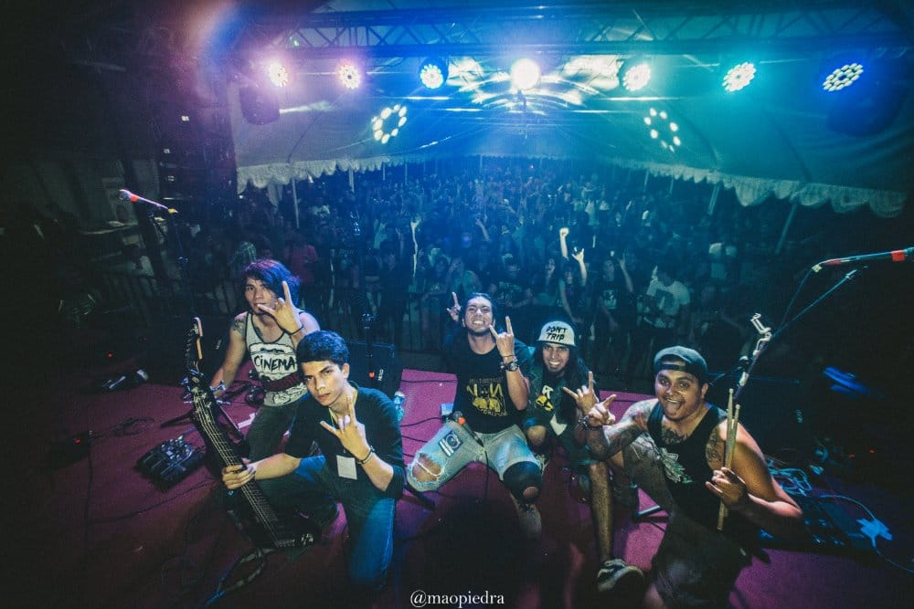

¿Dónde empezó mi pasión?
Empecé mi carrera en ingeniería de sistemas pero por cuestiones económicas no fue posible terminarla, entonces empecé a dar asesorías a otros estudiantes en temas de lógica y algunos lengujes de programación
Tiempo depués de aprender lenguajes como c++ , sql y java de los cuales estuve enseñando sus bases por un tiempo, pero no entraba otras salidas a saber programar más que dar clases, así que decidí dedicarme unos años a otra de mis grandes pasiones que es la Música.
¿Cómo fue que volví a la programación?
Aunque esta historia empezó en el 2017, hace apenas 1 año retomé la docencia dando clases a estudiantes de una academía de fuerza aerea en temas de lógica, algebra y bases de datos, y fue justo en ese momento donde entro el mundo del Desarrollo Web con una oportunidad de formar parte de un bootcamp de FrontEnd, era sólo una aplicación a una beca pero me abrió los ojos a un nuevo mundo
Desde que apliqué empecé por aprender lenguajes cómo CSS HTML y JavaScript, una vez me confirmaron que había obtenido la beca me puse manos a la obra y tiempo después...
Me gradué de forma satisfactoria destácandome academicamente